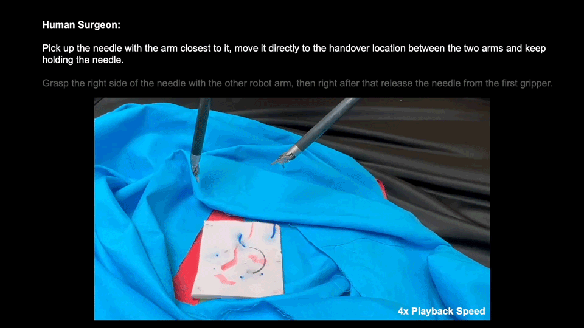
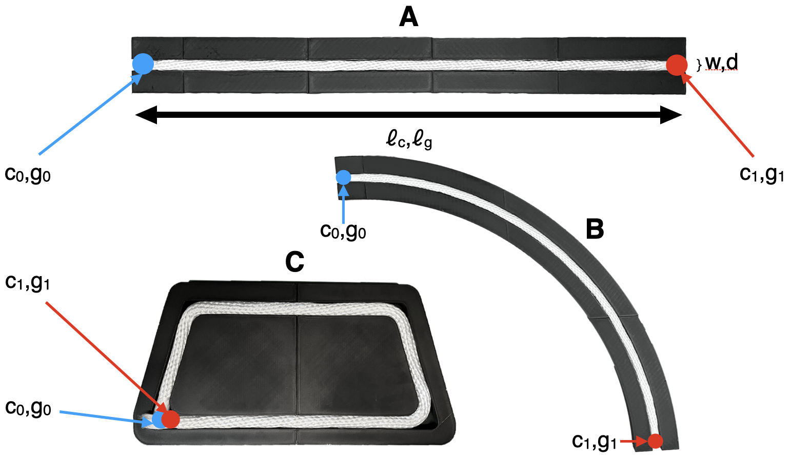
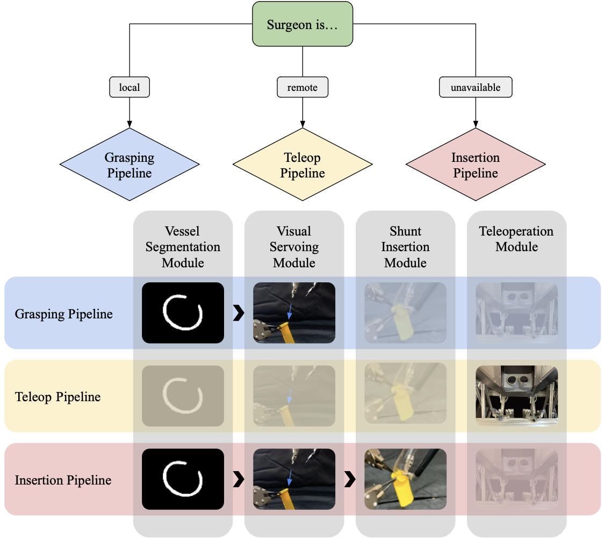
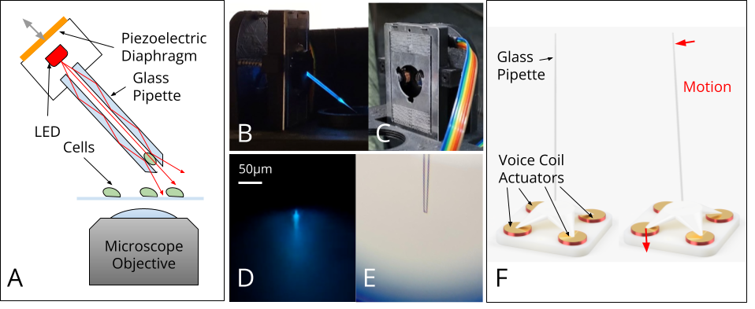
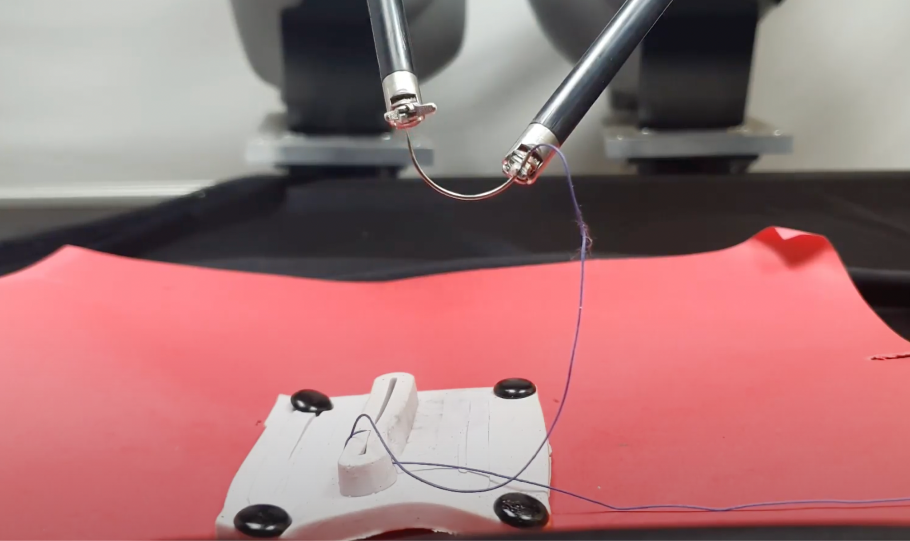
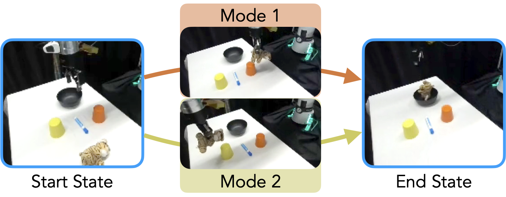
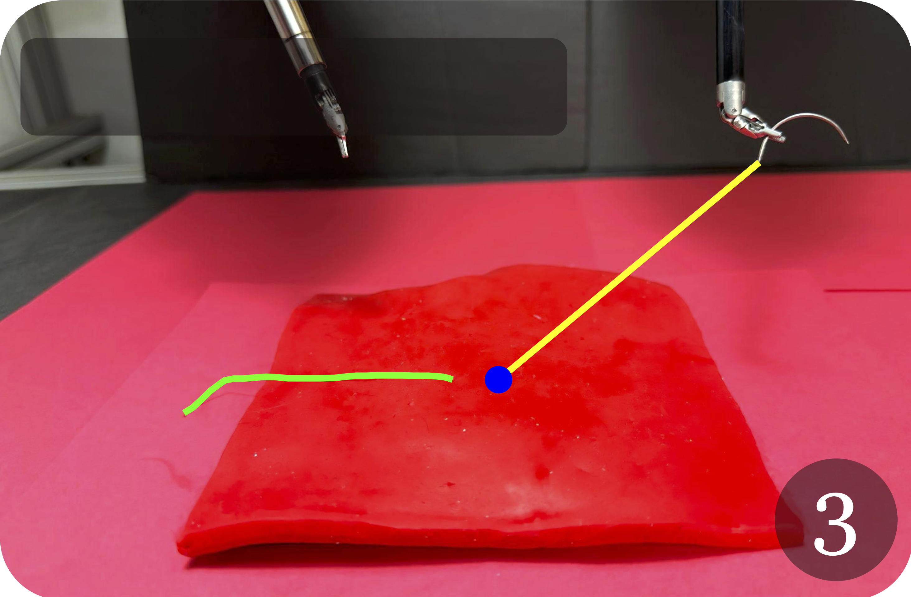
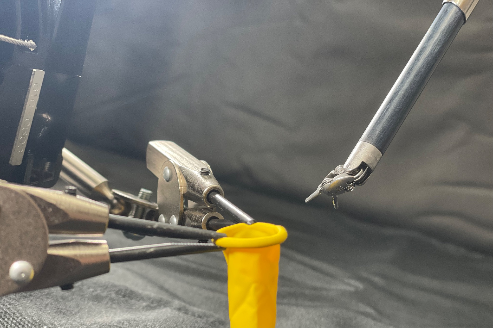
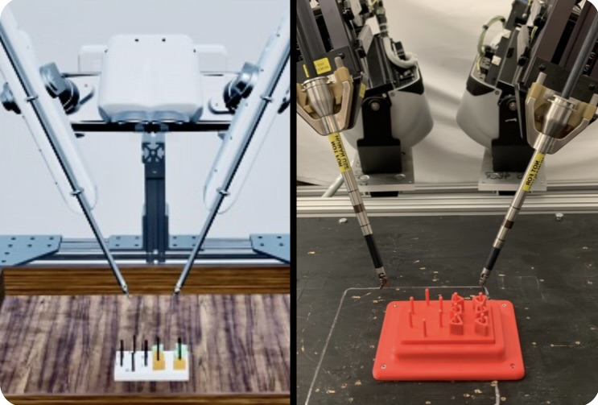

A Touch, Vision, and Language Dataset for Multimodal Alignment
We design and fabricate hardware for collecting aligned tactile
and visual scene observations, then use it to curate a dataset
of more than 40,000 vision-touch training pairs. Using a
combination of human language labels and pseudolabels, we train
an aligned tactile encoder and fine-tune a VLM to perform Q&A and
understanding tasks based on touch, vision, and language inputs.
ICML 2024 - Oral

SuFIA: Language-Guided Augmented Dexterity for
Robotic Surgical Assistants
We present SuFIA, the first framework for natural
language-guided augmented dexterity for robotic surgical
assistants. SuFIA incorporates the strong reasoning
capabilities of large language models (LLMs) with
perception modules to implement high-level planning and
low-level robot control for surgical sub-task execution.
This enables a task-independent approach to surgical augmented
dexterity and human-robot teaming.
IROS 2024

Automating Deformable Gasket Assembly
We formalize the gasket assembly task, in which a flexible
component is inserted into a rigid channel to create a
tight seal. This task is long horizon, low tolerance, and
contact rich, making it challenging to perform in a robotic
setting. We then present both a learned (using diffusion
policy) and an analytical (using computer vision) method for
autonomously performing this task.
CASE 2024

Deformable Gasket Assembly
We briefly introduce the gasket assembly task, a
high-contact industrial assembly problem, and
discuss a number of potential autonomous approaches.
ICRA 2024 - RMDO Wksp.

Robot-Assisted Vascular Shunt Insertion with the
dVRK Surgical Robot
We propose an expanded framework for vascular shunt insertion
assisted by a commercial robot surgical assistant under
various surgical use cases. We further present a physics-based
simulation environment for shunt insertion built on top of the
NVIDIA Isaac-ORBIT simulator and a dataset of insertion
trajectories collected using the environment. We then use the
framework to demonstrate autonomous vascular shunt insertion
with the dVRK robot in a realistic vessel phantom.
JMRR SI 2023

A Trimodal Framework for Robot-Assisted Vascular
Shunt Insertion When a Supervising Surgeon is Local,
Remote, or Unavailable
We develop a robotic system to autonomously assist in
vascular shunt insertion, a common surgical procedure
requiring a surgeon-and-surgical-assistant team
performed to temporarily restore blood flow to damaged
tissues. We consider three scenarios: (1) a surgeon is
available locally; (2) a remote surgeon is available
via teleoperation; (3) no surgeon is available. In
each scenario, the robot operates in a different mode,
either by teleoperation or automation, to perform the
missing functions.
ISMR 2023 - Oral

3-D Localization of Micromanipulators Using Microscopy
for Autonomous Visual Servoing
We rapidly determine the 3-D position of a glass-pipette
micromanipulator using color-coded illumination and DPC
optical microscopy, then demonstrate the potential for
autonomous visual servoing and multi-manipulator systems
for highly parallelized cell manipulation using the
proporsed localization method as a feedback controller.
Optica COSI 2022
>
This list contains some of the published, peer-reviewed
papers that I've been lucky enough to work on. By far
the best part of research is the opportunity to
collaborate with and learn from some of the smartest,
most interesting people in the world. All of these
papers would not have been possible without my super
cool co-authors, and I hope that you check out their
work as well if you find anything here of interest.

STITCH: An Augmented Dexterity Algorithm for Suture Throws
Involving Thread Management, Cinching, and Handover
We teach a surgical robot to autonomously close wounds in
dermal tissue using a simple running suture. To allow for
the millimeter-level precision necessary to complete this task,
we design a novel visual state-estimation and servoing pipeline
using an optical flow-based stereo vision model, learned image
segmentation. and RANSAC geometry fitting in point cloud space.
Our system demonstrates the ability to close raised, planar
wounds without human intervention.
ISMR 2024 - Best Paper R.U.

In-Context Imitation Learning by Prompting with
Sensorimotor Trajectories
Inspired by language models' strong in-context learning
capabilities, where models can answer questions based on
similar prompts without further training or fine-tuning,
we attempt to cast imitation learning as an in-context
learning problem. In particular, we concatenate different
trajectories of the same task and train a multi-modal
sequence model. At inference time, we prompt the model with
a trajectory on a new task and the model performs the same
task in a different environment configuration from the prompt,
and demonstrate that this is sufficient for acquiring many
previously unseen motor tasks.
Under Review

ORBIT-Surgical: An Open-Simulation Framework for
Accelerated Learning Environments in Surgical
Autonomy
We present ORBIT-Surgical, a physics-based surgical
robot simulation framework with photorealistic
rendering in NVIDIA Omniverse. We provide 14 benchmark
surgical training tasks for the da Vinci Research Kit
(dVRK) and Smart Tissue Autonomous Robot (STAR).
ORBIT-Surgical leverages GPU parallelization to train
reinforcement learning and imitation learning algorithms.
We also demonstrate sim-to-real transfer of policies
learned in ORBIT-Surgical onto a physical dVRK robot.
ICRA 2024

Self-Supervised Learning for Interactive Perception
of Thread for Autonomous Tail-Shortening
We present a machine learning method for tracking
and tracing thread in 3D which is robust to
occlusions and complex configurations, and apply
it to autonomously perform the "tail-shortening"
task: pulling thread through an insertion point
until a desired "tail" length remains exposed.
CASE 2023 - Finalist: Best Healthcare Automation Paper

Automating Vascular Shunt Insertion with the
dVRK Surgical Robot
We propose a pipeline to autonomously insert a
rigid object into a similar-diameter flexible tube,
as in shunting and deformable assembly tasks.
We use a learned visual model and an ensemble of
imitation learners to grasp and dilate the flexible
rim, then use a chamfer tilt followed by a screw
motion to insert the rigid body.
ICRA 2023

A Digital Twin Framework for Telesurgery in the
Presence of Varying Network Quality
We develop a "digital twin," a 3D simulator that
actively mirrors a real environment, for the FLS
peg transfer training task, and present a
framework that enables a teleoperator to perform
this task over unstable or low-bandwidth
communication channels using the digital twin.
The operator remotely controls the simulated
robot, which abstracts their motions into commands
and transmits them to the real robot for
semi-autonomous execution, then updates the
simulator to match the real state of the pegboard.
CASE 2022
Publications